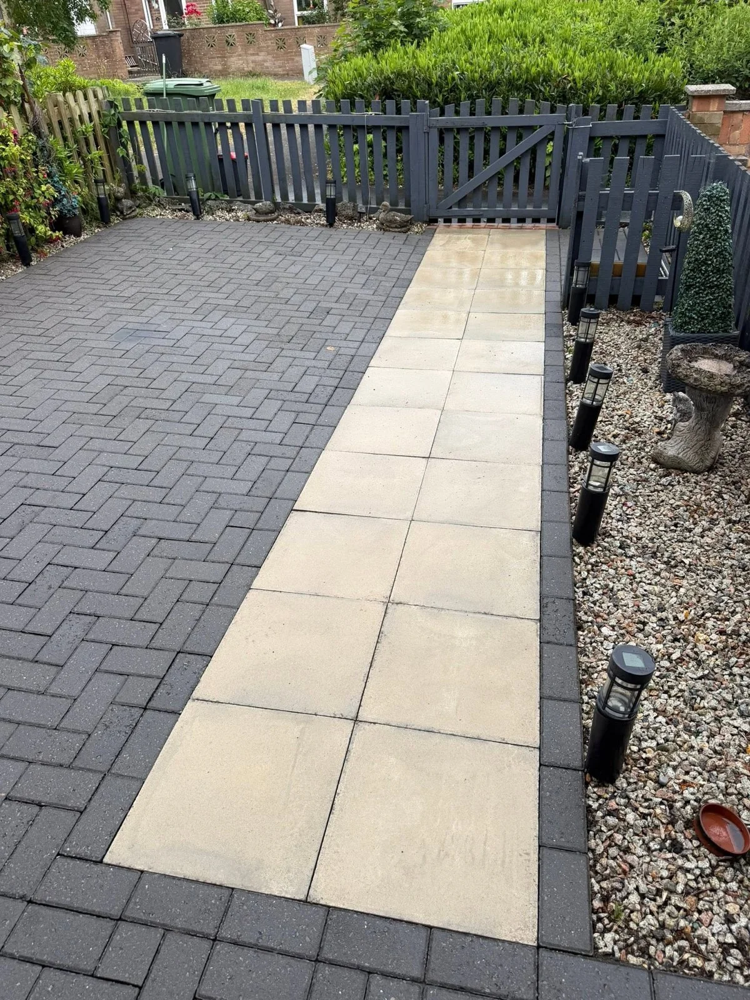

COAST TO COAST / EXMOUTH & EAST DEVON
Paths, steps & block paving in Exmouth
Weather and everyday use can leave paths and steps looking worn. Show us the route, surface and any areas that need particular attention.
WHAT TO EXPECT
Clean the routes you use every day
Paths and steps
Include the full length of the path or flight of steps, and point out damaged or loose areas in your photos.
Block paving
Tell us about the block type and joint condition, so we can discuss how to approach the clean.
Questions before you book
Can I include a path with a patio clean?
Yes. List each area in your enquiry so we can discuss them together.
What should I send for a quote?
Send the town or postcode, a short description and photos of the area. Let us know about access and water availability.
LET’S GET IT CLEAN
Show us what
needs a fresh start.
A driveway, patio or an entire commercial property. Tell us a little about the job and we’ll help you get started.
Send your details below, then add any photos in WhatsApp. Your message goes straight to Coast to Coast.
07384 168302